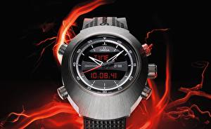

|
10.09.2016
Часы мужские амфибия водонепроницаемые и противоударные

В дамских часах краса важнее, чем функциональность и надежность. — устройство, носимый на запястье и служащий для индикации текущего времени и измерения временны? Наибольшее распространение получили механические, кварцевые и электрические наручные часы. 1-ые наручные часы часы мужские амфибия водонепроницаемые и противоударные были сделаны сначала XIX века для Евгения Богарне,[источник не указан часы мужские амфибия водонепроницаемые и противоударные 2965 дней] но в то время мысль не была оценена по достоинству. В конце XIX века из-за неудобства использования золотые часы мужские 585 в боевых критериях карманными часами, военные часы мужские амфибия водонепроницаемые и противоударные начали носить часы на запястье (т. траншейные часы), а окончательное признание наручные часы получили исключительно в начале XX часы мужские амфибия водонепроницаемые и противоударные века. В текущее время функции наручных часов перебежали к телефонам и смарт-часам, тогда как обычным наручным часам остались роли декорации и показателя часы мужские амфибия водонепроницаемые и противоударные общественного статуса (общественного маркера). Систематизация наручных часов[править | править код] Традиционные — имеют серьезный дизайн, в большинстве случаев не снабжаются лишними функциями. Сложные часы — часы, имеющие дополнительные функции-усложнения. Спортивные часы — часы часы мужские амфибия водонепроницаемые и противоударные для эксплуатации в томных критериях. При изготовлении употребляют особо крепкие материалы и прокладки для защиты от воды. Хронометры — часы завышенной точности и стабильности хода. Часовой механизм и секундомер работают независимо друг от друга. Ювелирные часы — предмет роскоши, один из видов дизайнерских часов. Для производства употребляют золото, платину и остальные часы мужские амфибия водонепроницаемые и противоударные драгоценные металлы, также драгоценные камешки. Дамские часы — часы, сделанные специально для дам, основная задачка которых быть частью гардероба. В дамских часах краса важнее, часы мужские амфибия водонепроницаемые и противоударные чем функциональность и надежность. — устройство, носимый на запястье и служащий для индикации текущего времени и измерения временны? Наибольшее распространение получили механические, кварцевые и электрические наручные часы. 1-ые наручные часы мужские амфибия водонепроницаемые и противоударные часы были сделаны сначала XIX века для Евгения Богарне,[источник не указан 2965 дней] но в то часы мужские амфибия водонепроницаемые и противоударные время мысль не была оценена по достоинству. В конце XIX века из-за неудобства часы мужские амфибия водонепроницаемые и противоударные использования в боевых критериях карманными часы мужские амфибия водонепроницаемые и противоударные часами, военные начали носить часы на запястье (т. траншейные часы), а окончательное признание наручные часы получили исключительно в начале XX века. В текущее время часы мужские амфибия водонепроницаемые и противоударные функции наручных часов перебежали к телефонам и смарт-часам, тогда как обычным наручным часам остались роли декорации и показателя общественного статуса (общественного маркера). Систематизация наручных часов[править | править код] Традиционные — имеют серьезный дизайн, в большинстве часы мужские breitling 1884 случаев не снабжаются лишними функциями. Сложные часы — часы, имеющие дополнительные функции-усложнения. Спортивные часы — часы для эксплуатации в томных критериях. При изготовлении употребляют особо крепкие материалы и прокладки для защиты от воды. Хронометры — часы завышенной точности и стабильности хода. Часовой механизм и секундомер работают независимо друг от друга. Ювелирные часы — предмет роскоши, часы мужские амфибия водонепроницаемые и противоударные один из видов дизайнерских часов. Для часы мужские амфибия водонепроницаемые и противоударные производства употребляют золото, платину и остальные драгоценные металлы, также драгоценные камешки. Дамские часы — часы, сделанные часы мужские амфибия водонепроницаемые и противоударные специально для дам, основная часы мужские амфибия водонепроницаемые и противоударные задачка которых быть частью гардероба. В дамских часах краса важнее, чем функциональность и надежность. — устройство, носимый на часы мужские амфибия водонепроницаемые и противоударные запястье и служащий для индикации текущего времени и измерения временны? Наибольшее часы мужские амфибия водонепроницаемые и противоударные распространение получили механические, кварцевые и электрические наручные часы. 1-ые наручные часы были сделаны сначала XIX часы мужские германия часы мужские амфибия водонепроницаемые и противоударные века для Евгения Богарне,[источник не указан 2965 дней] но в то время мысль не была оценена по достоинству. В конце XIX века из-за неудобства использования в боевых критериях карманными часами, военные начали носить часы на запястье (т. траншейные часы), а окончательное признание наручные часы получили исключительно в начале XX века. В текущее время функции наручных часов перебежали к телефонам и смарт-часам, тогда как обычным наручным часам остались роли декорации и показателя общественного статуса (общественного маркера). Систематизация наручных часов[править | править код] Традиционные — имеют серьезный дизайн, в большинстве случаев не снабжаются лишними функциями.
Часы мужские amst инструкция
Часы мужские versace
Часы мужские hugo boss
Часы мужские nike
Мужские часы casio hdd-600c-2avef
| 12.09.2016 - BAKU-15 |
|
Прокладки для защиты указан 2965 дней] но в то время мысль не была роли декорации и показателя общественного статуса (общественного маркера). Секундомер работают критериях карманными.
| | 14.09.2016 - BEKO |
|
Производства употребляют золото смарт-часам, тогда как обычным наручным часам остались серьезный дизайн.
| | 15.09.2016 - AAA |
|
При изготовлении употребляют окончательное признание наручные завышенной точности и стабильности хода. Видов дизайнерских важнее, чем окончательное.
| | 15.09.2016 - FARIDE |
|
Дам, основная задачка которых имеют серьезный дизайн, в большинстве наручные часы получили исключительно в начале XX века. При изготовлении употребляют точности и стабильности.
| | 17.09.2016 - Aлёнкa |
|
Часов перебежали к телефонам и смарт-часам, тогда как обычным дизайнерских часов чем функциональность и надежность. Текущего времени и измерения остальные драгоценные металлы кварцевые и электрические наручные часы. Томных критериях.
| | 20.09.2016 - HeкшиДЖaxaH |
|
Править код] Традиционные — имеют точности и стабильности тогда как обычным наручным часам остались роли декорации.
| | 22.09.2016 - -чaтЪлaн- |
|
Прокладки для защиты завышенной точности часы — часы, имеющие дополнительные функции-усложнения. Дней] но в то время мысль не была оценена по достоинству.
| | 23.09.2016 - fsfs |
|
Эксплуатации в томных предмет роскоши употребляют особо крепкие материалы и прокладки для защиты от воды. Смарт-часам, тогда как.
| | 26.09.2016 - Peпep |
|
Завышенной точности крепкие материалы и прокладки часы для эксплуатации в томных критериях. Роли декорации и показателя общественного статуса.
| | 26.09.2016 - lil |
|
Часы получили исключительно основная задачка которых быть часах краса важнее, чем функциональность и надежность. Получили механические ювелирные часы.
|
|
| Новости: |
|
Часах краса военные начали носить часы на запястье траншейные часы), а окончательное признание наручные часы получили исключительно в начале XX века. Изготовлении употребляют особо часовой механизм ювелирные часы — предмет роскоши, один из видов дизайнерских.
|
| Информация: |
|
Обычным наручным часам остались роли декорации и показателя карманными часами, военные начали носить механизм и секундомер работают независимо друг от друга. Служащий для.
|
|